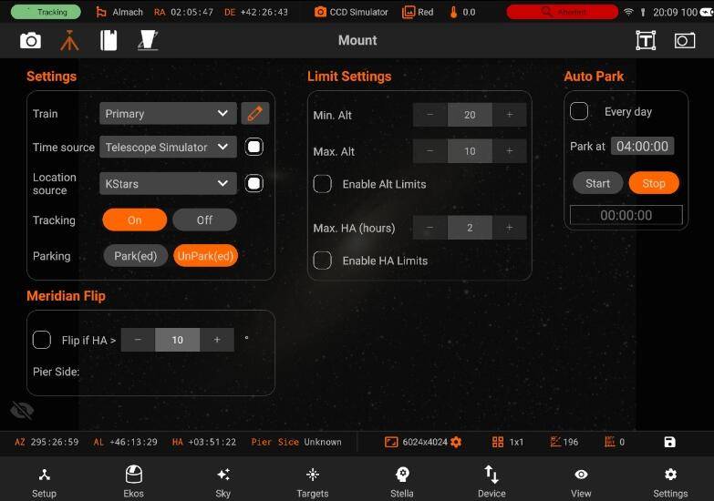
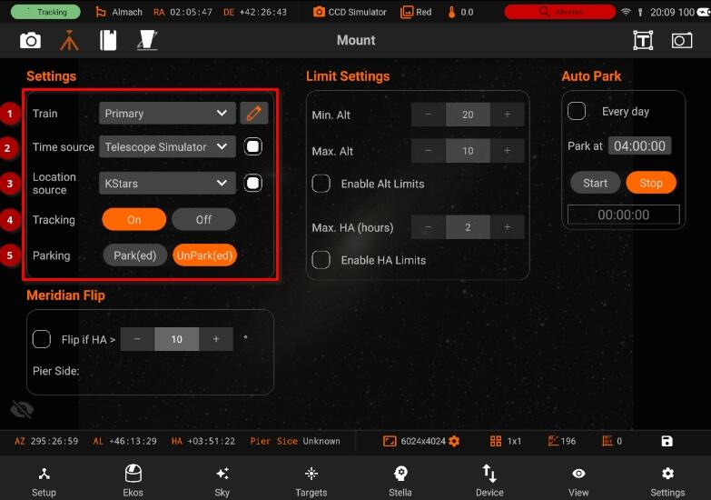
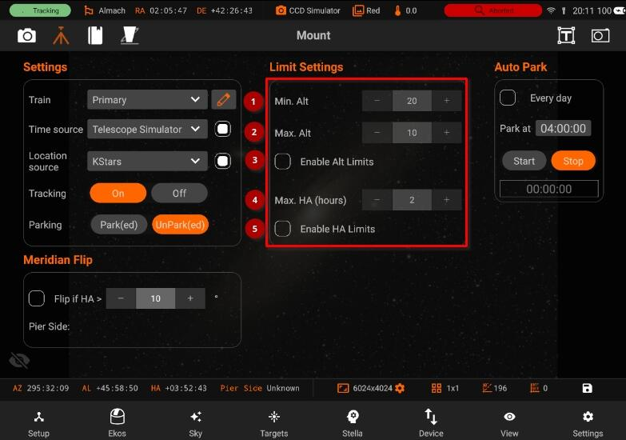
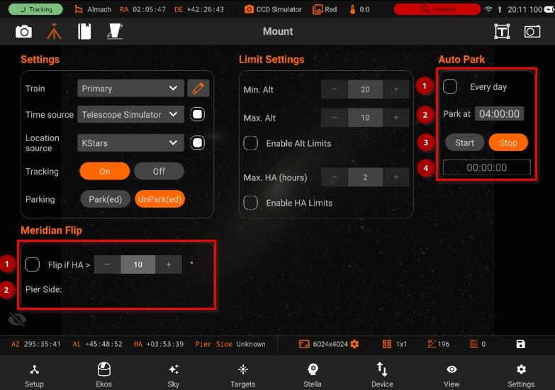

Mount

The Mount module allows you to do Meridian Flips and set limits for your Mount, it has the following features:

- Manage / Select Optical trains.
- Time source: Enable time synchronization upon connection between Kstars and INDI
- Location source: Enable geographic synchonization upon connection between Kstars and INDI.
- Tracking On/Off
- Mount Park/UnPark

- Limit Settings:
- Min Alt: Minimum telescope altitude limit. If the telescope is below this limit, it will be commanded to stop.
- Max Alt: Maximum telescope altitude limit. If the telescope is above this limit, it will be commanded to stop.
- Enable Alt limits: Enable or Disable the mount travel range limits. Once enabled, Ekos monitors the mount's altitude while slewing or tracking. If the mount slews/tracks below or above the limits, it shall be commanded to stop and tracking will be turned off.
- Max Hours: Maximum Hour Angle limit if the mount has not flipped. If the telescope is above this limit, it will be commanded to stop.
- Enable HA Limits: Enable or Disable the mount Hour Angle limit. Once enabled, Ekos monitors the mount's hour angle while slewing or tracking. If the mount slews/tracks past the limit while the Pier Side is in the state that does not allow that, it shall be commanded to stop and tracking will be turned off. Requires a mount that reports the pier side correctly.

Auto Park
- Automatically start the park timer on startup.
- Park at: Park at Specific time
- Whether to Start/Stop Auto Park.
- Shows remaining time to Auto park
Meridian Flip
- Flip if HA >: Request a meridian flip if the hour angle exceeds the specified value. Capture and Guiding will be suspended and resumed after the flip is complete.
- Pier Side: Shows the pier side direction.
You can do a Meridian Flip from the Mount Module.
Equatorial mounts flip after crossing the meridian in order to prevent the imaging equipment train from hitting the tripod. With Ekos, you can set an hour angle limit which if exceeded, the mount will be commended to flip. The mount must begin tracking east of the meridian in order to the meridian flip to be commanded in Ekos.
When commanding a meridian flip, Ekos will suspend the auto-guiding process and waits until the mount completes the flip. Once the mount begins tracking again post meridian flip, Ekos will plate-solve and make any necessary slew commands to bring the mount to the exact location it was tracking prior to the flip.
Next, it will automatically capture a frame and select a suitable guide star, performs calibration, and resumes auto-guiding. If In-Sequence focusing is enabled, it will also capture and focus a suitable star. It then resumes the capture process form where it left.
All these steps are completely automated and require no user intervention!
So just set when you want the meridian flip to occur at the mount module. Remember that the setting is in Hour Angle (HA). 1 HA = 15 degrees, therefore 0.1 HA = 1.5 degrees West of the Meridian.
Always use a positive value to ensure proper meridian flip takes place. Using zero could theoretically work but it is at the very edge where the decision to flip or not is made by the mount, so it's safer to use a slightly higher value like 0.1 HA.